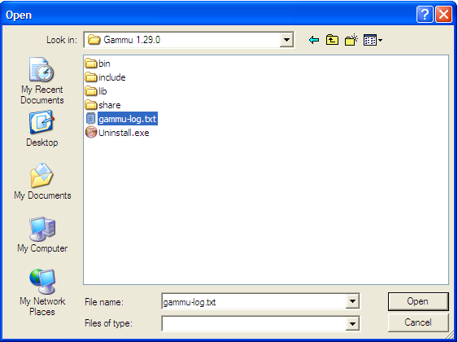
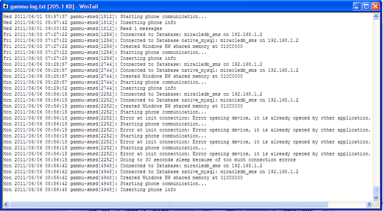

Anda dapat mendownload WinTail pada komputer server dengan alamat folder share:
\\192.168.1.2\Source\SMS Gateway\WinTail.exe

Setelah kita memilih file log gammu (gammu-log.txt), maka akan muncul isi dari file tersebut seperti berikut:

Informasi status, dan error akan muncul.
Copyright © 2010, IT Department of Miracle Aesthetic Clinic Group
Created with the Freeware Edition of HelpNDoc: Full featured Documentation generator